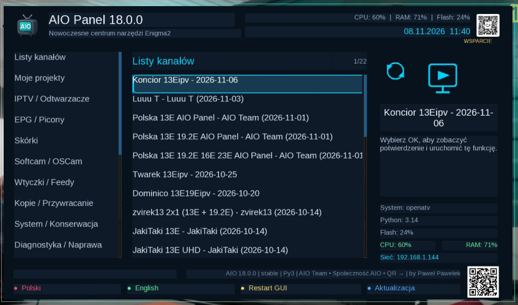

Uaktualnij, zachowując dane
Zachowaj FAVOURITES, własne bukiety, separatory, kolejność i numerację. DVB-T/T2, DVB-C i własne IPTV pozostają bez zmian. Aktualizacja tej samej listy dotyczy SAT; instalując inną, możesz zachować oba zestawy bukietów.
AIO TEAM · ENIGMA2 · WYDANIE 07.11.2026
AIO Panel IPK: zawsze najnowsza wersja — bez logowania, bez limitów i bez zużycia darmowej puli.
Nowy, bezpieczniejszy sposób instalowania i aktualizowania list kanałów. Zaktualizuj kanały satelitarne bez usuwania własnych FAVOURITES, bukietów, DVB-T/T2, DVB-C i IPTV. Nowa zakładka „Moje projekty”, poprawki OSCam oraz dopracowana obsługa Enigma2.

18.0.0 · 07.11.2026Najważniejsza nowość od 17.0.3
Nowy mechanizm podczas aktualizacji tej samej listy odświeża jej część satelitarną. Zachowuje własne bukiety FAVOURITES, ich układ, kolejność, separatory i numerację, a także lokalne kanały DVB-T/T2, DVB-C oraz IPTV.
Można też instalować kolejne, różne listy obok już posiadanych, bez wymuszonego usuwania poprzednich zestawów. Mechanizm weryfikuje dane i przewiduje wycofanie zmian po wykryciu błędu.
Więcej kontroli nad kanałami i bukietami · Enigma2 Python 2 / 3
Listy kanałów
Zachowaj FAVOURITES, własne bukiety, separatory, kolejność i numerację. DVB-T/T2, DVB-C i własne IPTV pozostają bez zmian. Aktualizacja tej samej listy dotyczy SAT; instalując inną, możesz zachować oba zestawy bukietów.
Tradycyjny sposób instalacji: poprzedni zestaw bukietów zastępuje nowa lista. Wybierz tylko wtedy, gdy świadomie chcesz rozpocząć od nowego układu.
Przerwanie operacji. Żadna lista ani konfiguracja tunera nie zostanie celowo zmieniona.
Przed aktualizacją wykonaj kopię konfiguracji tunera. Zachowanie FAVOURITES zostało potwierdzone w testach na Ustym 4K Pro, ale nie stanowi gwarancji identycznego działania na każdym obrazie Enigma2.
Nowa zakładka w panelu
Nową sekcję znajdziesz bezpośrednio pod „Listy kanałów”. Autorskie projekty nie są już powielane w pozostałych kategoriach samej wtyczki.

Rzeczywisty ekran nowej zakładki „Moje projekty” w AIO Panel 18.0.0.
Przy każdym projekcie dostępna jest opcja instalacji lub aktualizacji, zależnie od stanu tunera i dostępnych pakietów. Zobacz także katalog projektów na stronie.
Lista zmian
Szczególne podziękowania dla Leopolda Wójcika za testy wydań 17.0.4, r1, r2 i r3 na Ustym 4K Pro oraz precyzyjne zgłoszenia, m.in. błędu nazw kanałów <n/a>. W teście końcowym potwierdził zachowanie 100% własnej listy FAVOURITES, wraz z separatorami i numeracją 11130–11197, bez ponownego importu.
Oficjalne wydanie GitHub
Dwa osobne pakiety — suma SHA-256 jest inna dla IPK i DEB. Pliki pochodzą z wydania 18.0.0 w repozytorium PanelAIO-Plugin.
Uwaga dotycząca sum kontrolnych: poniższe wartości SHA-256, rozmiary i nazwy plików odnoszą się do historycznie opisanego wydania 18.0.0. Przycisk „Pobierz najnowszy IPK” zawsze kieruje do najnowszej stabilnej wersji, która może mieć inną sumę i nazwę. Sprawdź informacje o właściwej wersji w GitHub Releases.
2df6a2df207c9f6fe1e891199b7810d004a30823f46fd0a9339505b3ea7c22c39df6bed7b37500254b45b842d8825a0fc70b123a25aff071a8d202d00f1772b0Instalacja
Pobierz właściwy format dla swojego obrazu Enigma2, a następnie wykonaj restart GUI.
wget -q -O - "https://raw.githubusercontent.com/OliOli2013/PanelAIO-Plugin/main/installer.sh?$(date +%s)" | /bin/shWgraj plik IPK do katalogu /tmp/ tunera przez FTP/SFTP. W poleceniu poniżej zastąp numer 18.0.0 rzeczywistą wersją pobranego pliku. Następnie uruchom:
opkg install --force-reinstall /tmp/enigma2-plugin-extensions-panelaio_18.0.0_all.ipkWgraj plik DEB do /tmp/ na obrazie Enigma2 używającym menedżera dpkg. Następnie uruchom:
dpkg -i /tmp/enigma2-plugin-extensions-panelaio_18.0.0_all.debPowiązane działy
Wykonaj kopię list kanałów i konfiguracji Enigma2. Tryb zachowania danych przetestowano, ale wynik zależy od obrazu, struktury własnych list i stanu odbiornika. Nie wybieraj „Pełna wymiana”, jeśli chcesz zachować własne bukiety.